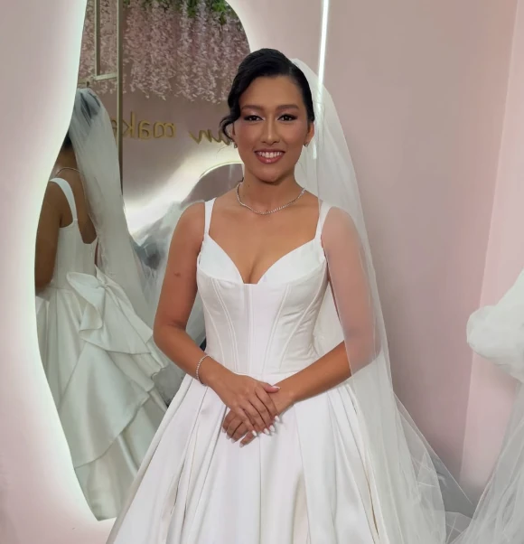

Portfólio
Cada rosto,
Cada rosto,
uma assinatura.
Noivas, formandas e makes sociais produzidos por Franciana, especialista em olhos. Uma seleção dos trabalhos reais do estúdio em São Luís.

Nenhuma fotografia nesta categoria por enquanto.
Quer um look assim
para o seu dia?
Manda a data e o tipo de evento no WhatsApp. A Fran responde com a disponibilidade da agenda.
Agendar meu horário ↗